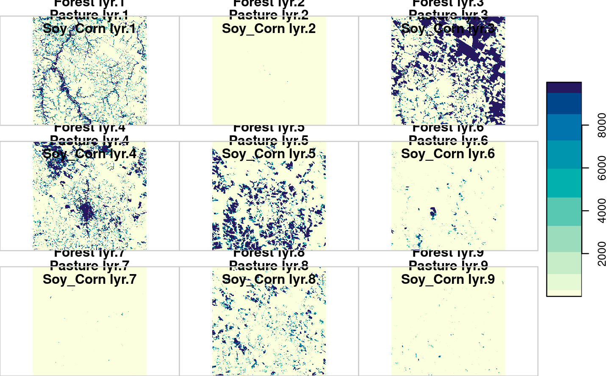

Chapter 6 Classification of Images in Data Cubes using Satellite Image Time Series
This chapter shows the use of the SITS package for classification of satellite images that are associated to Earth observation data cubes.
6.1 Data cube classification
The continuous observation of the Earth surface provided by orbital sensors is unprecedented in history. Just for the sake of illustration, a unique tile from MOD13Q1 product, a square of \(4800\) pixels provided every 16 days since February 2000 takes around \(18\)GB of uncompressed data to store only one band or vegetation index. This data deluge puts the field into a big data era and imposes challenges to design and build technologies that allow the Earth observation community to analyse those data sets (Camara et al. 2017).
To classify a data cube, use the function sits_classify() as described below. This function works with cubes built from raster bricks. The classification algorithms allows users to choose how many process will run the task in parallel, and also the size of each data chunk to be consumed at each iteration. This strategy enables sits to work on average desktop computers without depleting all computational resources. The code bellow illustrates how to classify a small raster brick image that accompany the package.
Once a data cube which has associated files is defined, the steps for classification are:
- Select a set of training samples.
- Train a machine learning model.
- Classify the data cubes using the model, producing a data cube with class probabilities.
- Label the cube with probabilities, including data smoothing if desired.
6.2 Adjustments for improved performance
To reduce processing time, it is necessary to adjust sits_classify() according to the capabilities of the server. There is an inevitable trade-off between computing time, memory use, and I/O operations. The best trade-off has to be determined by the user, considering issues such disk read speed, number of cores in the server, and CPU performance.
The first parameter is memsize. It controls the size of the main memory (in GBytes) to be used for classification. The user must specify how much free memory will be used by sits_classify. A practical approach is to set memsize to about half of the total memory available.
When using the sits_rfor and sits_svm model, users can also specify the number of cores to be used for parallel processing by setting the parameter multicores. In this case, once a block of data is read from disk into main memory, it is split into different cores, as specified by the user. In general, the more cores are assigned to classification, the faster the result will be. The multicores parameter has no effect when working with deep learning models (sits_deeplearning, sits_FCN, sits_TempCNN and sits_LSTM_FCN) and in the case of extreme gradient boosting (sits_xgboost). The underlying algorithms available in these models already have parallel processing facilities.
# select the bands "ndvi", "evi"
samples_2bands <- sits_select(samples_matogrosso_mod13q1, bands = c("NDVI", "EVI"))
#select a rfor model
xgb_model <- sits_train(samples_2bands, ml_method = sits_xgboost())
data_dir <- system.file("extdata/sinop", package = "sitsdata")
# create a raster metadata file based on the information about the files
sinop <- sits_cube(source = "LOCAL",
satellite = "TERRA",
sensor = "MODIS",
name = "Sinop",
data_dir = data_dir,
parse_info = c("X1", "X2", "band", "date"))
# classify the raster image
sinop_probs <- sits_classify(sinop, ml_model = xgb_model,
memsize = 4, multicores = 1,
output_dir = tempdir())
# label the probability file
# (by default selecting the class with higher probability)
sinop_label <- sits_label_classification(sinop_probs, output_dir = tempdir())
plot(sinop_label, title = "Sinop-label")
6.3 Final remarks
Current approaches to image time series analysis still use limited number of attributes. A common approach is deriving a small set of phenological parameters from vegetation indices, like beginning, peak, and length of growing season (Brown et al. 2013), (Kastens et al. 2017), (Estel et al. 2015), (Pelletier et al. 2016). These phenological parameters are then fed in specialized classifiers such as TIMESAT (Jonsson and Eklundh 2004). These approaches do not use the power of advanced statistical learning techniques to work on high-dimensional spaces with big training data sets (James et al. 2013).
Package sits can use the full depth of satellite image time series to create larger dimensional spaces. We tested different methods of extracting attributes from time series data, including those reported by Pelletier et al. (2016) and Kastens et al. (2017). Our conclusion is that part of the information in raw time series is lost after filtering. Thus, the method we developed uses all the data available in the time series samples. The idea is to have as many temporal attributes as possible, increasing the dimension of the classification space. Our experiments found out that modern statistical models such as support vector machines, and random forests perform better in high-dimensional spaces than in lower dimensional ones.